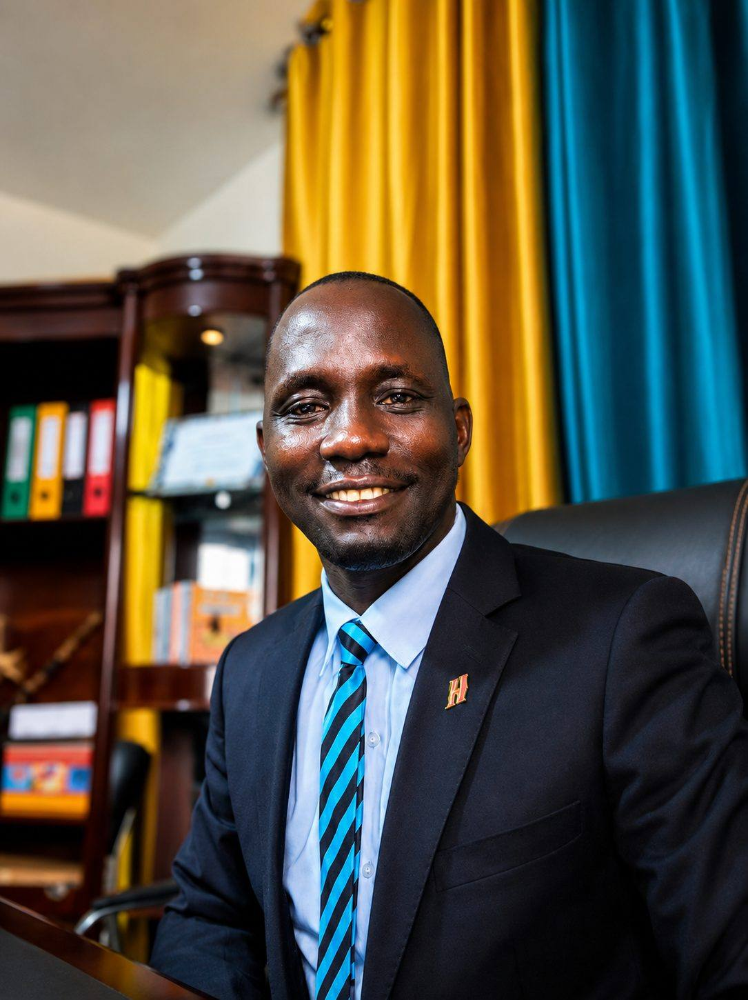
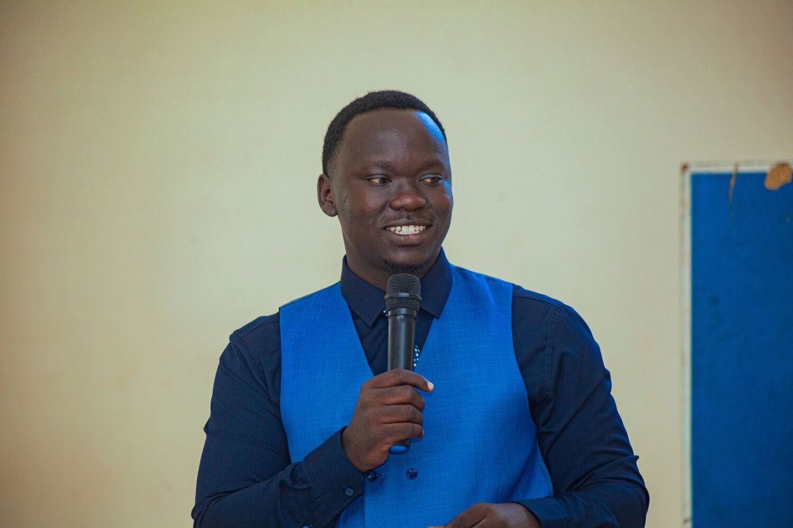
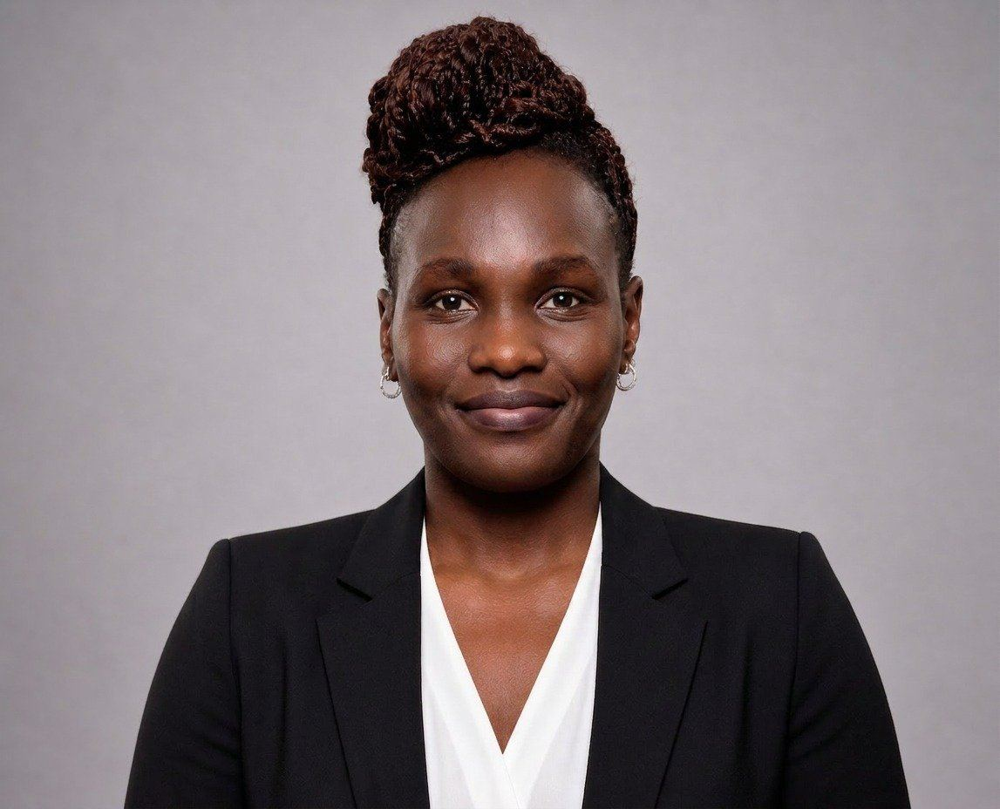

About · Team
The team keeping every intake running
Coordination, communication, and logistics, handled by people who care about getting every detail right for your family.

Banio Luiji Nobert
Founder and Team Leader, Potential Unexplored Ltd | Lead Facilitator
Banio Luiji Nobert is the Founder and Team Leader of Potential Unexplored Ltd (PUL) and the vision bearer of the Boys to Men Mentorship Camp. The camp grew from one belief: every young person carries great potential, and it must be discovered, developed and deployed. The same belief now shapes his work as a consultant, trainer and coach who helps organisations across Uganda and Africa to build stronger leaders, stronger teams and people who are ready for life.
At the camp, Banio is the Lead Facilitator. He led the development of the training manual that guides every key session, and he works with the boys on mindset, money, habits, emotional intelligence, goal setting, networking and public speaking. The camp has run eight intakes and welcomed boys from five countries, and the programme has reached more than 30,000 young people.
Beyond the camp, Banio has worked for more than ten years with people and organisations at every level, from communities to boardrooms. His last role before transitioning fully to self employment was ERI East Africa Programme Coordinator at horizont3000, supporting partner organisations in agriculture, economic empowerment, food security and natural resource management. In the last five years, he and his team have facilitated more than 130 training, coaching and mentorship sessions across humanitarian and refugee response, banking and financial services, agriculture, higher education, youth development, and faith based and community organisations. Institutions served include UNHCR, Bank of Uganda, Centenary Bank, KCB, War Child Canada, CORDAID South Sudan, horizont3000, Opportunity International, the Mastercard Foundation Scholars Program, Gulu University and Uganda Christian University. At present, PUL is delivering a one year leadership training and coaching programme for more than 30 managers of Opportunity International AgFinance, with a similar engagement for NASHO Computers. Banio is a GALS Master Trainer and an ERI Approach Master Trainer, and the author of twelve books.
To invite Banio and the PUL team to work with your organisation, school or community, write to info@potentialunexplored.com, call or WhatsApp +256 775 495 431, or visit potentialunexplored.com.

Eduardo Fortunato Atibuni
Managing Director, Boys to Men Mentorship Programme
Eduardo is the Managing Director of the Boys to Men Mentorship Programme, which Potential Unexplored Ltd runs as part of its Life Readiness Programme. He oversees the programme and works closely with the Founder and the rest of the team, so that every intake delivers what families have been promised.
At the camp, Eduardo is one of the facilitators, working alongside the other facilitators, mentors and speakers. He takes the lead on practical skilling for young people and also facilitates sessions on other soft skills. Beyond the camp, he co-facilitates training, coaching and mentoring programmes for organisations and groups in leadership, team building and youth mentorship, and he has built strong competence in each of these areas.

Kokora Patricia
Operations Manager
Patricia is a certified coach with MOGi Global Leadership School, founded by Dr Mike Oladipo. She is also the Operations Manager at Potential Unexplored Ltd, where she supports the coordination and logistics behind the camp. At the camp, she is one of the facilitators, working alongside the other facilitators, mentors and speakers.
Patricia is a firm advocate for the boy child. She believes that mentoring a boy is not a luxury but a necessity for the society he will one day help to lead. For her, it is a way of caring for the boy himself, and it is also an investment in the women he will meet, work alongside, marry and raise children with. A boy who has been guided well learns to listen, to respect and to protect, and those lessons reach his sisters, his wife and his daughters long after the camp has ended.
Patricia holds the family to be sacred, so she never sees a boy on his own. She sees a son, a brother and a future husband and father, and she works to bring parents and guardians into his story. She also joins coaching and mentoring work with organisations and groups in leadership, team building and youth mentorship.
Looking for the visiting mentors who work directly with boys during camp? See Mentors.